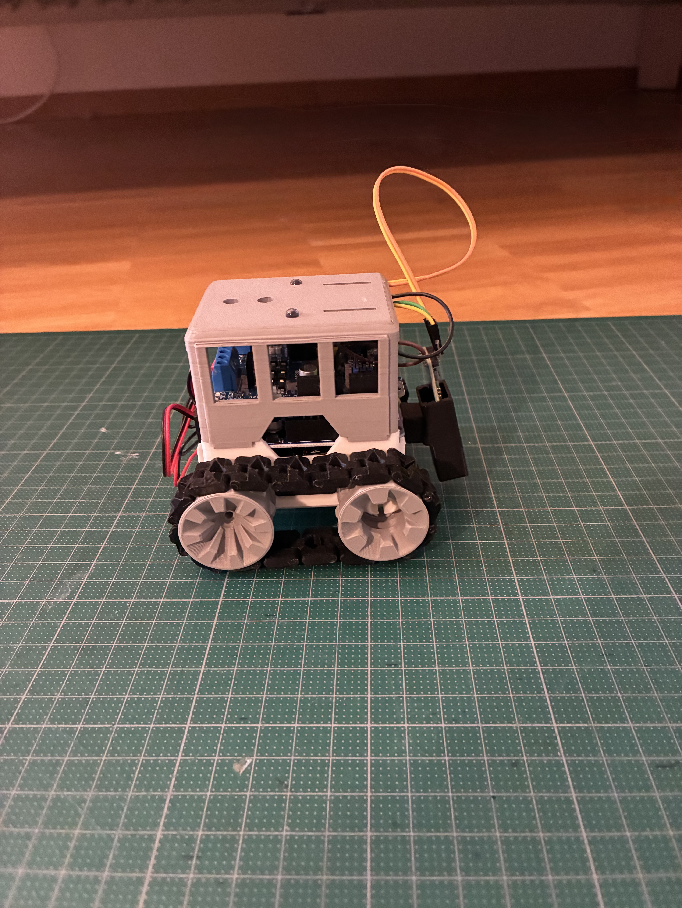
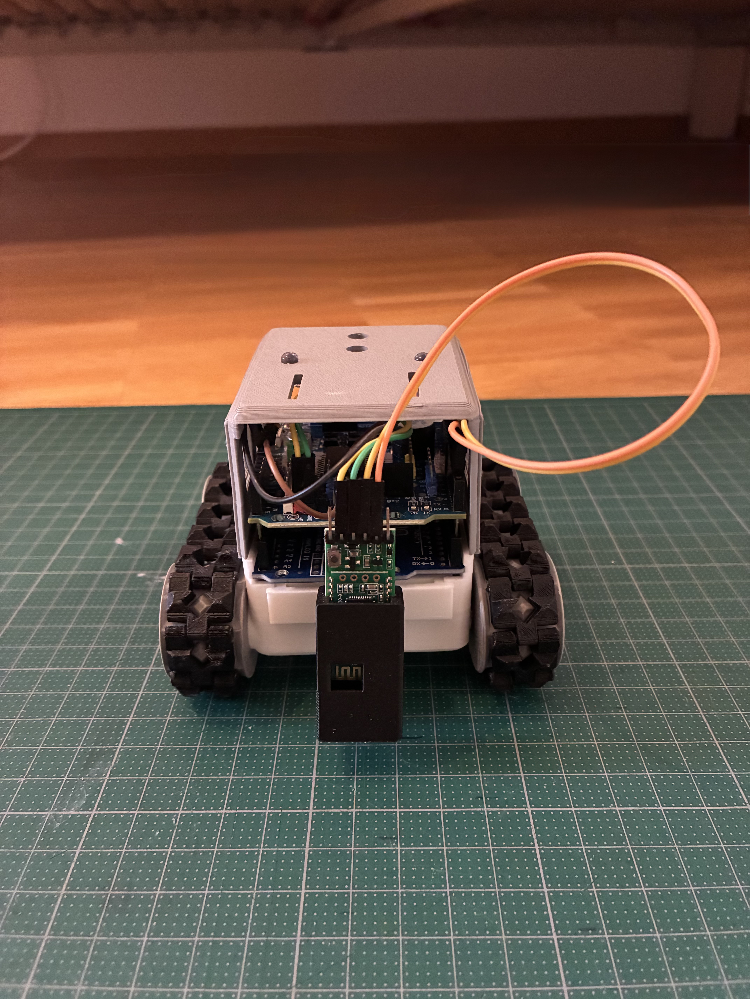
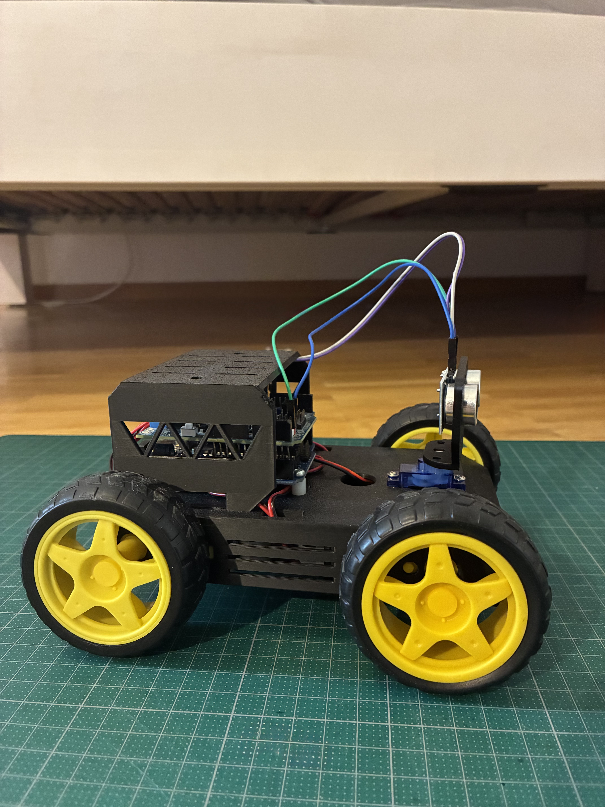
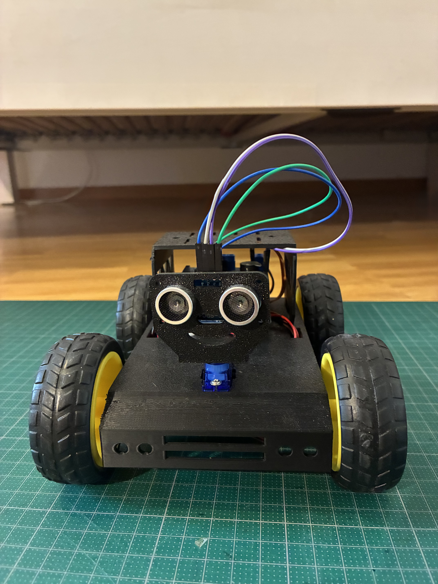
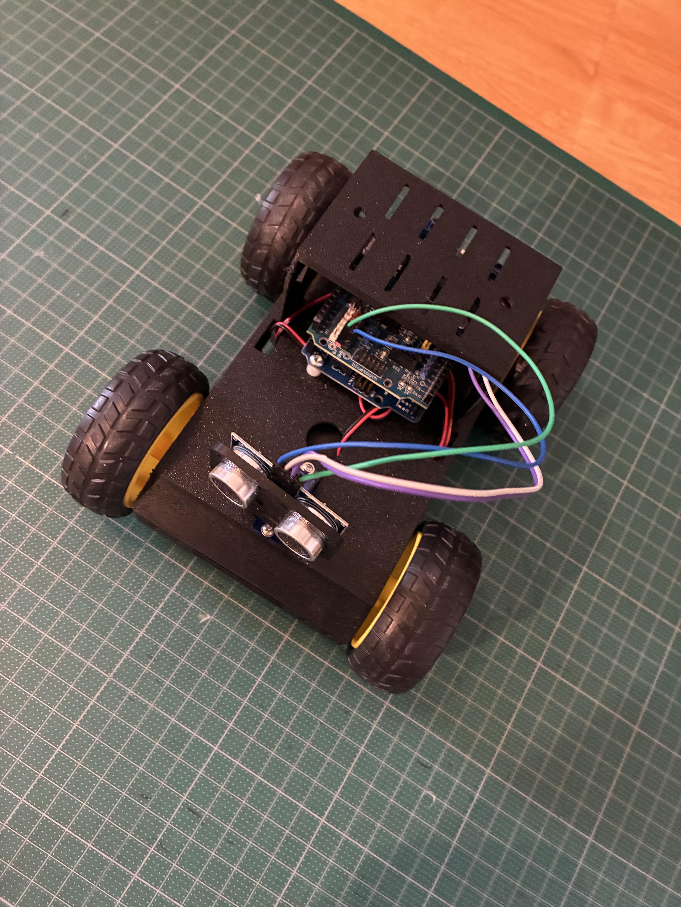

Over here I listed some of my projects I did. Those projects are hardware and software. Sadly, I didn't know about GitHub when I did all the projects, so there aren't rlly GitHub Repos from them.
So In my (short) Hardware career, I build two Robots. They both are build with a Arduino Uno as thier little Brain. The First one is this little Robot here. I made diffrent sensors and stuff for it. Even a Bluetooth Dongle, so I can drive it from my Phone. It also has some parts which can detect if something is in it's way, it can follow a black line via a diffrent sensor, you can out a pen to the front of the robot and it can draw something, and you can of course steer the robot with your phone. All of those diffrent sensors are easy to switch out. Just remove the old one, put the new one on and load the new code onto the Arduino. And Voila.



The second Robot is a little less intresting. Although, the other parts are also compatible with this robot, they are more meant to work with the first one. THis Robot just has 2 intended uses. First, let it drive while being controlled on the phone (via Bluetooth) and second, driving on itself with a sensor that spins, detects obstacles in its way and drives around them. And doing all of that while always keeping a nice smile.



Just like any other developer, I have made some small scripts. Nothing dangerous or crazy, just little life simplifications that save me a few minutes of time. As an example a script that merges PDF files into one single file. The whole file doesn't use any online Cloud, so the PDF's stay local.
I've also made some games. 3 To be exact. All of them are made in Godot. They are all rather small, so nothing I could release on Steam. I just made the, cause they're fun to do. The first one is the legendary Game made with the tutorial from Brackeys on a Godot 2D game (You can check the video out here)


The second one is a Game I made for my best friend for her confirmation. It was about her loosing her Dress and she had to find it. It was a 2D top Down game, played through in about 10 to 15 minutes. Although it looked and played simple it had a combat system, Scene Loading ang diffrent stuff that isn't that easy. I sadly don't have any pictures or the project itself, but I remember it being pretty solid.
The Final Game was my biggest project. I did it as my Final project for school. It also was a 2D top down Game. It had everything from a Combat System to a working upgrade systems to diffrent enemys. I spend about 100 hours on it and recieved an A+ for it. If you're intrested, you can play the game here.